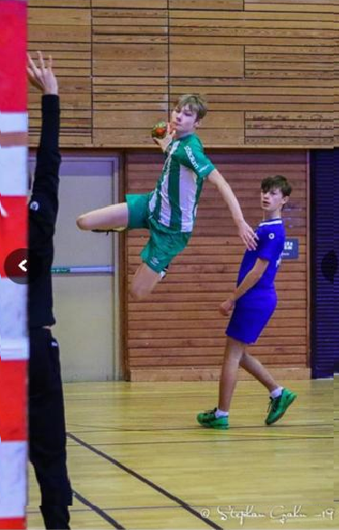

Om mig
Jag heter Zakarias Fagerstedt. Går andra året på NTI, min passion ligger bland datorspel, som många andra på NTI
¨Som sagt, jag heter Zakarias och mitt bästa tidsfördriv just nu är att ägna mig åt League of legends och World of warcraft. Innan sommarlovet valde jag att sluta på handboll som jag tränat det tidgare 8 åren, detta för att träningen blev för mycket för mig och jag inte fick någon egen tid för att plugga och spela spel. Just nu bor jag varannan vecka hos min mamma och varannan vecka hos min pappa, dem har varit skilda ett tag men dem har fortfarande en bra relation så det uppstår inga familjeproblem. Ibland är det dock lite tröttsamt att åka ut hela vägen till åkersberga där min mamma bor, istället för att åka hem till min pappa som bor i sjöstan. Jag spenderar därför en lång tid på kommunalresor varje dag jag åker in till skolan, men jag har vant mig efter 6-7 år av det.
